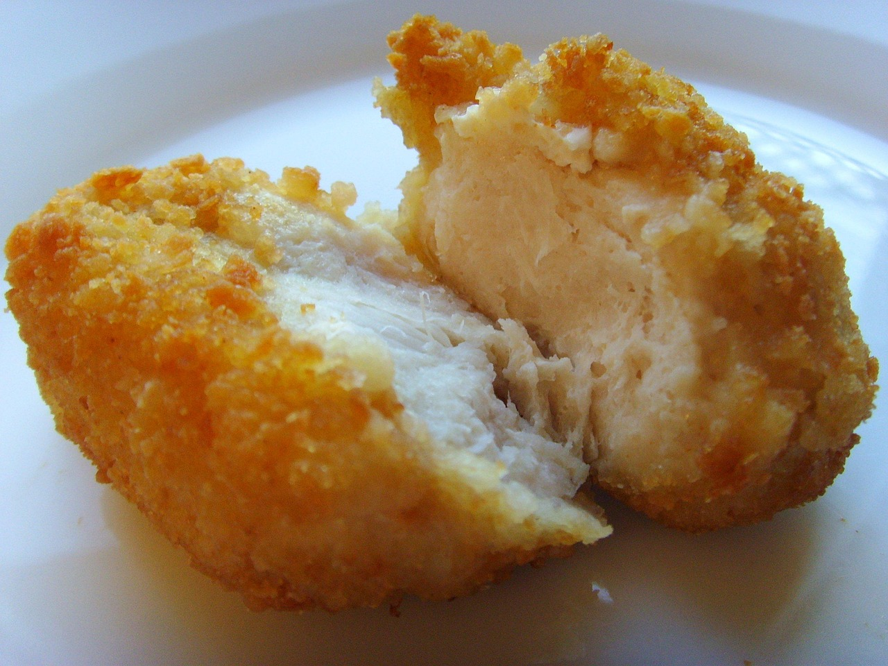

Homepage
Garlic Fried Chicken

Description
This fried chicken recipe uses garlic power and paprika to give the breading a unique flavour.
Ingredients
- Garlic powder (2 teaspoons, or to taste)
- Ground black papper (1 teaspoon)
- Salt (1 teaspoon)
- Paprika (1 teaspoon)
- Seasoned bread crumbs (1/2 cup)
- All-purpose flour (1 cup)
- Milk (1/2 cup)
- Egg (1x)
- Skinless, boneless chicken breast halves, pounded thin (x4)
- Oil for frying (1 cup, or as needed)
Steps
- In a shallow dish, mix together the gralic power, pepper, salt, paprika, bread crumbs and flour.
- In a separate dish, whisk together the milk and egg.
- Heat the oil in an eletric skillet set to 350°F (175°C).
- Dip the chicken into the egg and milk mixture, then dredge in the dry ingredients until evenly coated.
- Fry the chicken in hot oil for about 5 minutes per side, or until chicken is cooked through and uices run clear.
- Remove from the oil and serve!